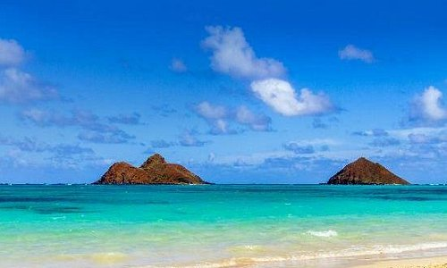
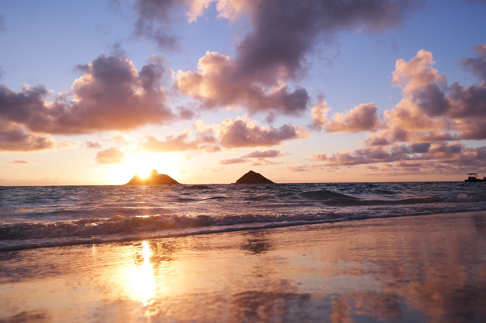
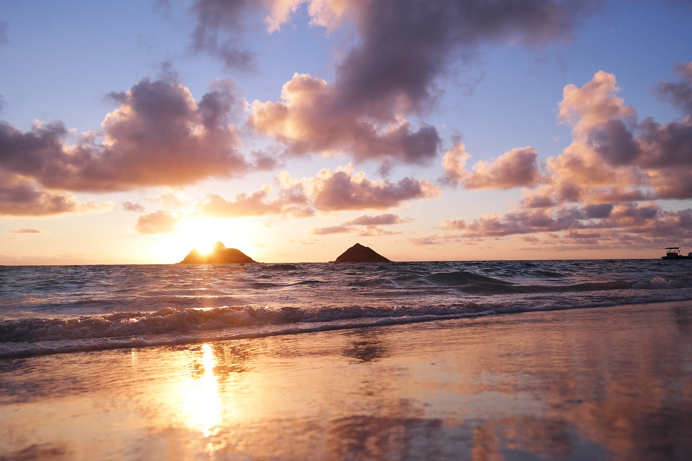
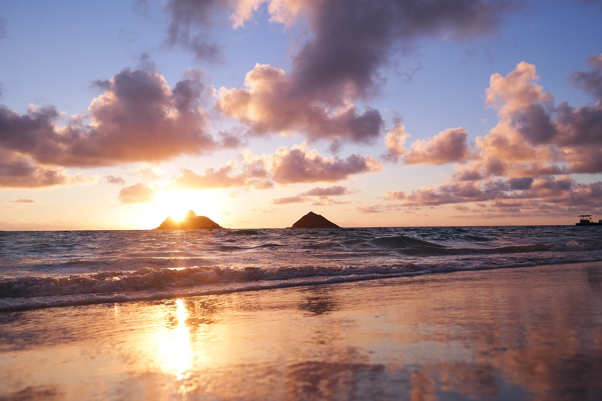

Honolulu, the capital city of Hawaii, is the only U.S. state capital
that is located in a tropical rainforest climate. The city experiences
consistent warm temperatures throughout the year, with average highs
ranging from 80 to 90 degrees Fahrenheit (27 to 32 degrees Celsius).
This tropical climate, combined with beautiful beaches and stunning
natural landscapes, makes Honolulu a popular tourist destination for
people from around the world.Stunning Beaches Hawaii is famous for its
breathtaking beaches with crystal-clear waters and pristine white or
black sand. Some renowned beaches include Waikiki Beach on Oahu,
Kaanapali Beach on Maui, and Poipu Beach on Kauai. These beaches offer
opportunities for sunbathing, swimming, surfing, and snorkeling. The
Aloha State Hawaii is often referred to as "The Aloha State" due to
the warm hospitality and spirit of aloha that the locals embrace.
Aloha represents love, peace, and compassion, and it's a significant
part of Hawaiian culture.Honolulu has a vibrant multicultural
heritage, influenced by Hawaiian, Asian, and Western cultures. This
diversity is reflected in the city's cuisine, festivals, and art. The
Aloha Tower, built in 1926, was the tallest building in Hawaii until
1969. It served as a lighthouse and a symbol of welcome to visitors
arriving by sea.Honolulu is known for its favorable climate, with warm
temperatures year-round and trade winds that provide a refreshing
breeze. The Honolulu International Airport, also known as Daniel K.
Inouye International Airport, is the main gateway to Hawaii and one of
the busiest airports in the United States.
Selected City: kailua
"Kailua" means "two seas" or "two currents" in the Hawaiian language,
referring to the two lagoons (Kawainui and Kaelepulu) that once
existed in the area. culture. Kailua is a haven for water sports
enthusiasts. The steady trade winds and calm waters make it an ideal
destination for activities like windsurfing, kitesurfing, kayaking,
paddleboarding, and sailing. Kailua gained popularity worldwide when
former President Barack Obama and his family chose to vacation in
Kailua during their holidays. They rented a vacation home near Kailua
Beach during his presidency.Kailua is home to the largest wetland in
the state of Hawaii, known as Kawainui Marsh. This 800-acre wetland is
a significant habitat for native Hawaiian birds and plants and is an
essential cultural site for the Hawaiian people.Kailua has a strong
sense of community, with many locally-owned businesses, shops, and
restaurants that contribute to its unique character. The town hosts
various events and festivals throughout the year, bringing residents
and visitors together to celebrate the local culture.


Selected City: Kapolei
Kapolei is often referred to as the "Second City" of Oahu, as it has
been designated as the major urban center and a key driver of economic
growth and development on the island. It serves as a hub for
businesses, shopping, entertainment, and residential
communities.Kapolei is home to the Kapolei Technology Park, a 40-acre
business park that focuses on high-tech industries such as information
technology, telecommunications, and research and development. It
serves as a hub for innovation and technological advancement in the
region. Kapolei is a key stop along the Honolulu Rail Transit Project,
a major transportation initiative aimed at improving public transit on
the island of Oahu. The Kapolei "Ewa-Kai" Rail Station will connect
Kapolei to other parts of the island, providing residents with an
alternative mode of transportation. Kapolei is home to several
shopping centers and entertainment venues, including the Ka Makana
Ali'i shopping center. This open-air mall offers a wide range of
shops, restaurants, and entertainment options, making it a popular
destination for residents and visitors.Kapolei boasts a variety of
outdoor recreational opportunities. The city is surrounded by
beautiful beaches, such as Ko Olina Beach Park, which offers pristine
sands, crystal-clear waters, and stunning sunsets. Kapolei also has
several parks, golf courses, and hiking trails for residents and
visitors to enjoy.Kapolei is becoming an education hub, with several
schools and educational institutions located in the area. It is home
to the University of Hawaii - West Oahu, which provides higher
education opportunities to students in the region.The newly opened Ka
Makana Ali'i Cultural Center in Kapolei celebrates Hawaiian culture
and arts. It features performances, exhibitions, and workshops that
showcase the rich heritage and traditions of the Hawaiian people.
Selected City: Oahu
Oahu is the most populous island in Hawaii, with a population of over
900,000 people. The majority of Hawaii's residents live on Oahu,
making it the most densely populated island as well.Oahu is a melting
pot of cultures and ethnicities. It has a rich cultural heritage
influenced by Native Hawaiians, Polynesians, Asians (particularly
Japanese, Chinese, Filipino, and Korean), Europeans, and other
immigrant groups.Oahu is home to several iconic landmarks, including
Diamond Head, a volcanic tuff cone that offers panoramic views of
Waikiki and Honolulu; Pearl Harbor, a historic site that played a
significant role in World War II; and the famous Waikiki Beach, a
popular tourist destination.Oahu is often considered the birthplace of
modern surfing. The North Shore of the island, particularly spots like
Pipeline and Sunset Beach, is renowned for its massive waves and hosts
prestigious surfing competitions, including the Vans Triple Crown of
Surfing.Hanauma Bay: Located on the southeastern coast of Oahu,
Hanauma Bay is a popular destination for snorkeling and marine life
observation. The bay is a protected nature preserve, known for its
vibrant coral reef and diverse marine ecosystem.Oahu has a vibrant
culinary scene, influenced by its diverse cultural heritage. From
traditional Hawaiian cuisine to international fusion dishes, the
island offers a wide variety of dining options, including food trucks,
local markets, and renowned restaurants. Oahu offers diverse
landscapes, ranging from picturesque beaches and lush rainforests to
rugged mountains and valleys. Visitors can explore attractions like
Hanauma Bay, Kualoa Ranch, Manoa Falls, and the Makapuu Lighthouse
Trail, each offering unique natural beauty.


 
